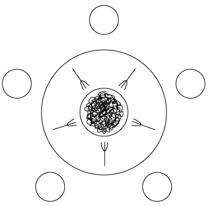

|
|
|
|
12.7 Exercises
|
12.1 |
Give an example of a "benign" race condition―one
whose outcome affects program behavior, but not correctness. |
|
12.2 |
We have defined the ready list of a thread package
to contain all threads that are runnable but not running, with a separate
variable to identify the currently running thread. Could we just as easily
have defined the ready list to contain all runnable threads, with the
understanding that the one at the head of the list is running? (Hint: think
about multiprocessors.) |
|
12.3 |
Imagine you are writing the code to manage a hash table
that will be shared among several concurrent threads. Assume that operations
on the table need to be atomic. You could use a single mutual exclusion lock
to protect the entire table, or you could devise a scheme with one lock per
hash-table bucket. Which approach is likely to work better, under what
circumstances? Why? |
|
12.4 |
The typical spin lock holds only one bit of data, but
requires a full word of storage, because only full words can be read,
modified, and written atomically in hardware. Consider, however, the hash
table of the previous exercise. If we choose to employ a separate lock for
each bucket of the table, explain how to implement a "two-level"
locking scheme that couples a conventional spin lock for the table as a whole
with a single bit of locking information for each bucket. Explain why
such a scheme might be desirable, particularly in a table with external
chaining. (Hint: See the paper by Stumm et al. [UKGS94].) |
|
12.5 |
Drawing inspiration from Examples 12.28
and 12.29,
design a nonblocking linked-list implementation of a stack using compare_and_swap. (When CAS was first introduced, on the IBM 370 architecture, this
algorithm was one of the driving applications [Tre86].) |
|
12.6 |
Building on the previous exercise, suppose that stack
nodes are dynamically allocated. If we read a pointer and then are delayed
(e.g., due to preemption), the node to which the pointer refers may be
reclaimed and then reallocated for a different purpose. A subsequent compare-and-swap may then succeed when logically it should not. This issue
is known as the ABA problem. |
|
Give a concrete example―an interleaving of operations in
two or more threads―where the ABA problem may result in incorrect behavior
for your stack. Explain why this behavior cannot occur in systems with
automatic garbage collection. Suggest what might be done to avoid it in
systems with manual storage management. |
|
|
12.7 |
We noted in Section 12.3.2
that several processors, including the PowerPC, MIPS, and Alpha, provide an
alternative to compare_and_swap (CAS) known as load_linked/store_conditional (LL/SC). A load_linked instruction loads a memory location into a register and
stores certain book-keeping information into hidden processor registers. A store_conditional instruction stores the register back into the memory
location, but only if the location has not been modified by any other
processor since the load_linked was executed. Like compare_and_swap,
store_conditional returns an indication of whether it succeeded or not. a.
Rewrite the code sequence of Example 12.28
using LL/SC. b.
On most machines, an SC instruction can fail for any of
several "spurious" reasons, including a page fault, a cache miss,
or the occurrence of an interrupt in the time since the matching LL.
What steps must a programmer take to make sure that algorithms work correctly
in the face of such failures? c.
Discuss the relative advantages of LL/SC
and CAS. Consider how they might be implemented on a
cache-coherent multiprocessor. Are there situations in which one would work
but the other would not? (Hints: consider algorithms in which a thread may
need to touch more than one memory location. Also consider algorithms in
which the contents of a memory location might be changed and then restored,
as in the previous exercise.) |
|
12.8 |
Starting with the test-and-test_and_set
lock of Figure 12.8,
implement busy-wait code that will allow readers to access a data structure
concurrently. Writers will still need to lock out both readers and other
writers. You may use any reasonable atomic instruction(s) (e.g., LL/SC).
Consider the issue of fairness. In particular, if there are always
readers interested in accessing the data structure, your algorithm should
ensure that writers are not locked out forever. |
|
12.9 |
Assuming the Java memory model, a.
Explain why it is not sufficient in Figure 12.11
to label X and Y as volatile. b.
Explain why it is sufficient, in that same figure,
to enclose C's reads (and similarly those of D) in a synchronized block for some common shared object O. c.
Explain why it is sufficient, in Example 12.30,
to label both inspected and X as volatile, but not to
label only one. |
|
|
(Hint: you may find it useful to consult Doug Lea's Java
Memory Model "Cookbook for Compiler Writers," at http://gee.cs.oswego.edu/dl/jmm/cookbook.html). |
|
12.10 |
Implement the nonblocking queue of Example 12.29
on an x86. (Complete pseudocode can be found in the paper by Michael and
Scott [MS98].)
Do you need fence instructions to ensure consistency? If you have access to
appropriate hardware, port your code to a machine with a more relaxed memory
model (e.g., a PowerPC). What new fences do you need? |
|
12.11 |
Consider the implementation of software transactional
memory in Figure 12.18. a.
How would you implement the read_set, write_map, and lock_map
data structures? You will want to minimize the cost not only of insert and
lookup operations, but also of (1) "zeroing out" the table at the
end of a transaction, so it can be used again; and (2) extending the table if
it becomes too full. b.
The validate routine is called in two different places.
Expand these calls in-line and customize them to the calling context. What
optimizations can you achieve? c.
Optimize the commit routine to exploit the fact that a
final validation is unnecessary if no other transaction has committed since
valid_time. d.
Further optimize commit by observing that the for loop in
the finally clause really needs to iterate over orecs, not over addresses
(there may be a difference, if more than one address hashes to the same
orec). What data, ideally, should lock_map hold? |
|
12.12 |
The code of Example 12.33
could fairly be accused of displaying poor abstraction. If we make desired_condition
a delegate (a subroutine or object closure), can we pass it as an extra
parameter, and move the signal and scheduler_lock management inside sleep_on?
(Hint: consider the code for the P operation in Figure 12.14.) |
|
12.13 |
The mechanism used in Figure 12.12
(page 614) to make scheduler code reentrant employs a single OS-provided lock
for all the scheduling data structures of the application.Among other
things,this mechanism prevents threads on separate processors from performing
P or V operations on unrelated semaphores, even when none of the
operations needs to block. Can you devise another synchronization mechanism
for scheduler-related operations that admits a higher degree of concurrency
but that is still correct? |
|
12.14 |
Show how to implement a lock-based concurrent set as a
singly linked sorted list. Your implementation should support insert, find,
and remove operations, and should permit operations on separate portions of
the list to occur concurrently (so a single lock for the entire list will not
suffice). (Hint: you will want to use a "walking lock" idiom in
which acquire and release operations are interleaved in non-LIFO order.) |
|
(Difficult) Implement a nonblocking version of the set of
the previous exercise. (Hint: You will probably discover that insertion is
easy but deletion is hard. Consider a lazy deletion mechanism in which
cleanup [physical removal of a node] may occur well after logical completion
of the removal.) |
|
|
12.16 |
To make spin locks useful on a multiprogrammed
multiprocessor, one might want to ensure that no process is ever preempted in
the middle of a critical section. That way it would always be safe to spin in
user space, because the process holding the lock would be guaranteed to be
running on some other processor, rather than preempted and possibly in need
of the current processor. Explain why an operating system designer might not
want to give user processes the ability to disable preemption arbitrarily.
(Hint: Think about fairness and multiple users.) Can you suggest a way to get
around the problem? (References to several possible solutions can be found in
the paper by Kontothanassis, Wisniewski, and Scott [KWS97].) |
|
12.17 |
Show how to use semaphores to construct a scheduler-based n-thread
barrier. |
|
12.18 |
Prove that monitors and semaphores are equally powerful.
That is, use each to implement the other. In the monitor-based implementation
of semaphores, what is your monitor invariant? |
|
12.19 |
Show how to use binary semaphores to implement general
semaphores. |
|
12.20 |
Suppose that every monitor has a separate mutual exclusion
lock, so that different threads can run in different monitors concurrently,
and that we want to release exclusion on both inner and outer monitors when a
thread waits in a nested call. When the thread awakens it will need
to reacquire the outer locks. How can we ensure its ability to do so? (Hint:
think about the order in which to acquire locks, and be prepared to abandon
Hoare semantics. For further hints, see Wettstein [Wet78].) |
|
12.21 |
Show how general semaphores can be implemented with
conditional critical regions in which all threads wait for the same
condition, thereby avoiding the overhead of unproductive wake-ups. |
|
12.22 |
Write code for a bounded buffer using the protected object
mechanism of Ada 95. |
|
12.23 |
Repeat the previous exercise in Java using synchronized statements or methods. Try to make your solution as
simple and conceptually clear as possible. You will probably want to use notifyAll. |
|
12.24 |
Give a more efficient solution to the previous exercise
that avoids the use of notifyAll. (Warning: It is tempting to observe that the
buffer can never be both full and empty at the same time, and to assume
therefore that waiting threads are either all producers or all consumers.
This need not be the case, however: if the buffer ever becomes even a
temporary performance bottleneck, there may be an arbitrary number of waiting
threads, including both producers and consumers.) |
|
12.25 |
Repeat the previous exercise using Java Lock
variables. |
|
12.26 |
Explain how escape analysis, mentioned briefly in
the sidebar on page 472,
could be used to reduce the cost of certain synchronized
statements and methods in Java. |
|
12.27 |
The dining philosophers problem [Dij72]
is a classic exercise in synchronization (Figure 12.19). Five philosophers
sit around a circular table. In the center is a large communal plate of
spaghetti. Each philosopher repeatedly thinks for a while and then eats for a
while, at intervals of his or her own choosing. On the table between each
pair of adjacent philosophers is a single fork. To eat, a philosopher
requires both adjacent forks: the one on the left and the one on the right.
Because they share a fork, adjacent philosophers cannot eat simultaneously. Write a solution to the dining philosophers problem in
which each philosopher is represented by a process and the forks are
represented by shared data. Synchronize access to the forks using semaphores,
monitors, or conditional critical regions. Try to maximize concurrency. |
|
12.28 |
In the previous exercise you may have noticed that the
dining philosophers are prone to deadlock. One has to worry about the
possibility that all five of them will pick up their right-hand forks
simultaneously, and then wait forever for their left-hand neighbors to finish
eating. Discuss as many strategies as you can think of to address
the deadlock problem. Can you describe a solution in which it is provably
impossible for any philosopher to go hungry forever? Can you describe a
solution that is fair in a strong sense of the word (i.e., in which no one
philosopher gets more chance to eat than some other over the long term)? For
a particularly elegant solution, see the paper by Chandy and Misra [CM84]. |

Figure 12.19: The Dining
Philosophers.
Hungry philosophers must contend for the forks to their left and right in order
to eat.
|
In some concurrent programming systems, global variables
are shared by all threads. In others, each newly created thread has a
separate copy of the global variables, commonly initialized to the values of
the globals of the creating thread. Under this private globals approach,
shared data must be allocated from a special heap. In still other programming
systems, the programmer can specify which global variables are to be private
and which are to be shared. Discuss the tradeoffs between private and shared global
variables.Which would you prefer to have available, for which sorts of
programs? How would you implement each? Are some options harder to implement
than others? To what extent do your answers depend on the nature of processes
provided by the operating system? |
|
|
12.30 |
Rewrite Example 12.49
in Java 5. |
|
12.31 |
AND parallelism in logic languages is analogous to the parallel
evaluation of arguments in a functional language (e.g., Multilisp). Does OR
parallelism have a similar analog? (Hint: think about special forms [Section
10.4].) Can you suggest a way to obtain the effect of OR parallelism in
Multilisp? |
|
12.32 |
In Section 12.4.5
we claimed that both AND parallelism and OR parallelism were problematic in
Prolog, because they failed to adhere to the deterministic search order
required by language semantics. Elaborate on this claim. What specifically
can go wrong? |
On the CD 12.33�C12.37 In More Depth.